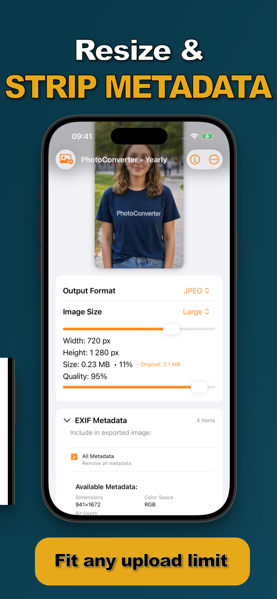

A photo of your couch, posted to a marketplace, can contain the GPS coordinates of your living room. Photos carry a hidden manifest — EXIF metadata — recording where, when, and on what device every shot was taken. Most people share it constantly without knowing.
What Your Photos Say About You
Typical EXIF payload: precise GPS coordinates, date and time to the second, device model, camera settings, sometimes even orientation history. Big social networks strip it on upload — but email, marketplaces, forums, classified ads, and file transfers often pass it straight through to whoever receives the file.
iOS's Built-In Option (and Its Limits)
Apple lets you disable location per share: tap Options at the top of the share sheet and toggle Location off. It's better than nothing — but it's a per-share toggle that's easy to forget, it only covers location (not timestamps or device data), and it doesn't help with files sent through other channels.
Strip Metadata in One Tap (Step by Step)
- Select the photos you're about to shareMarketplace shots, forum posts, photos for strangers — select them all in Photos.
- Share to Photo ConverterTap Share → “Convert with PhotoConverter.”
- Enable “Remove all metadata”The EXIF panel shows exactly what the file carries — dimensions, color space, GPS, timestamps. One checkbox clears all of it from the export.
- Convert and share the clean copiesThe exported photos contain the picture and nothing else. Your originals keep their metadata in your library.

When to Strip
Any photo going to someone you don't know: marketplace listings, classifieds, forums, dating profiles, review sites. Combine it with a format conversion or compression in the same pass — and because the whole thing runs on-device, the unstripped original never touches a server. That last point matters more than it seems: here's why.
Try it on your own photos
Photo Converter is free to download with a 3-day free trial — convert your first batch in the next two minutes, without anything leaving your phone.
Get Photo Converter on the App Store